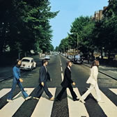
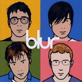

<!DOCTYPE html PUBLIC "-//W3C//DTD HTML 4.01//EN"
   "http://www.w3.org/TR/html4/strict.dtd">

<html lang="en">
<head>
	<meta http-equiv="Content-Type" content="text/html; charset=utf-8">
	<title>index</title>
	<meta name="generator" content="TextMate http://macromates.com/">
	<meta name="author" content="Adam Singer">
	<!-- Date: 2010-02-02 -->
</head>
<body>

</body>
</html>


<!DOCTYPE html PUBLIC "-//W3C//DTD XHTML 1.0 Strict//EN" "http://www.w3.org/TR/xhtml1/DTD/xhtml1-strict.dtd">

<html xmlns="http://www.w3.org/1999/xhtml" xml:lang="en" lang="en" >

	<head>

		<title>jQuery CoverFlow Demo 2009</title>

		<!-- Stylesheets for this demo -->

 		<style type="text/css"/>
			body {  margin: 10px; margin-left: auto; margin-right: auto; background: black;}
			h3,h4 { color:#fff; font-family:Tahoma; margin-left: 10px;}
			h3 a{ text-decoration:none; color:#fff;}
			#summaryText { color:#fff; font-family:Tahoma; font-size: 12px; margin-left:10px;}
			#bodyWrap { width: 800px; margin-left: auto; margin-right: auto;}
			#overlay {  background: url('resources/trans.png') repeat-y; }
			#coverflowContainer { border: 5px solid #444444; width: 600px; margin-left: auto; margin-right: auto;}
			#coverflow    { width: auto; height: 350px; border: 0px solid red; }
			.sliderTrack  { margin-left:-100px;background:transparent url('images/sliderbg.jpg') no-repeat scroll left top; height:26px; position:relative; text-align:left; width:388px;}
			.sliderHandle { background:transparent url('images/knobbg.png') no-repeat scroll left top; cursor:pointer; height:26px; margin-left:30px; position:absolute; top:0px;width:27px;}
			.coverflowCaptions { display: none;}
			.captionHolder {  font-size: 20px; margin-left:18px;margin-top:20px; color: white; text-shadow: #ccc 0.1em 0.1em 0.2em; font-family: Tahoma;  }
		</style>

		<script type="text/javascript" src="/javascripts/jquery-1.4.min.js"></script>

		<script type="text/javascript" src="/javascripts/jquery.mousewheel.min.js"></script>

		<script type="text/javascript" src="jquery.dimensions.js"></script>

		<script type="text/javascript" src="ui.mouse.js"></script>

		<script type="text/javascript" src="ui.slider.js"></script>

		<script type="text/javascript" src="jquery.reflect.js"></script>

		<script type="text/javascript" src="jquery-cflow.js"></script>

		<!--- Initiate Control -->

		<script type="text/javascript">
			$(function() {
				$('#coverflow').coverflow({
					captions: true, 
					useReflection: false
				});
			});
		</script>

	</head>
	<body>


		<h3>jQuery Coverflow Demo</h3>

		<p>
			This is a demo of the Apple iTunes CoverFlow effect working using<br/>
			jQuery keyboard events, the Reflection plugin and a Coverflow library.
		</p>

		<div class="wrap" id="bodyWrap">

			<div id="coverflow">

				

				

				

				

				

				

				

				

				

				

				

			</div>

		</div>

	</body>

</html>